At the end of my time in Kenya, I went to the Maasai Mara National Park to see all the amazing animals of East Africa. One will often see baboons and zebras while driving through Kenya, but to see lions, cheetahs and elephants, the Maasai Mara is the place to go. The drive was long, and about half of it was bumpy.
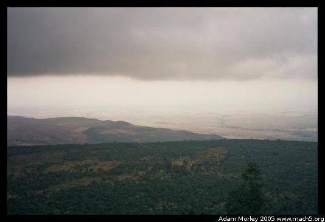On the way to the Maasai Mara, we stopped at the Rift Valley viewpoint. Sadly, it was cloudy and close to raining. But the Rift Valley is neat no matter what the weather --- many, many fossils showing the evolution of modern humans come from parts of the Rift Valley.
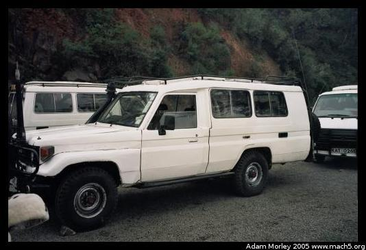There were even true safari vehicles with snorkels.
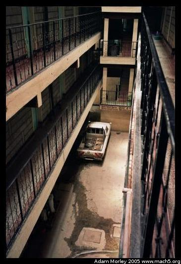 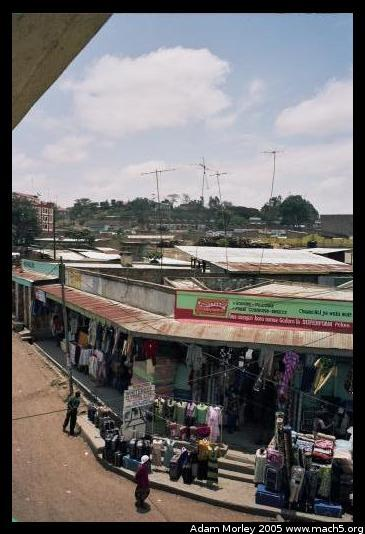 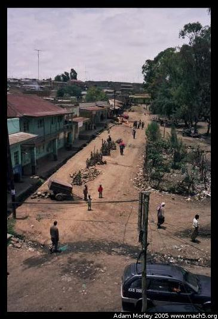We stopped for lunch at a hotel about halfway from Nairobi to the park. Above are photos of the inside of the hotel, and from the second floor balcony where we had lunch.
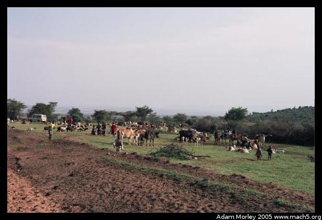We even saw some Maasai herding their cattle outside the park. The Maasai are a tribe in Kenyan that herds cattle.
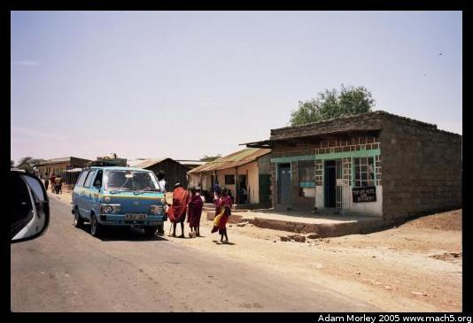And passed through a Maasai village.
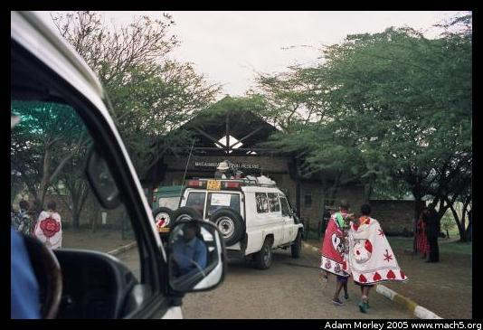After a stop at the Maasai village (a standard tourist destination where one can see the Maasai's traditional cow-dung huts, shop at their gift shop and watch them jump up and down), we arrived at the gate to the park.
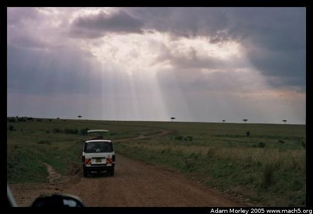The sky is rather lovely.
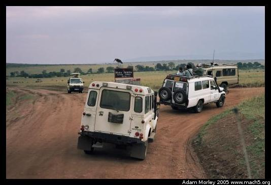 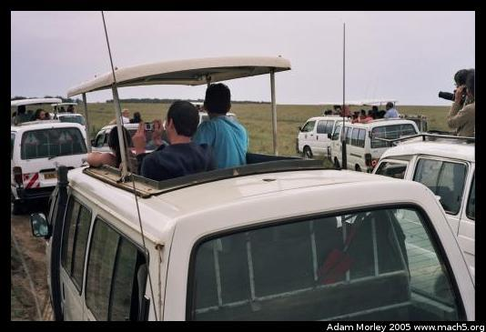And the park was rather busy. Why?
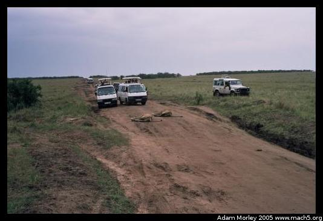 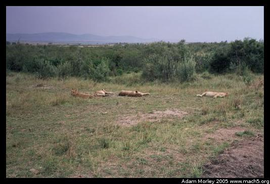Lions sleeping in the road.
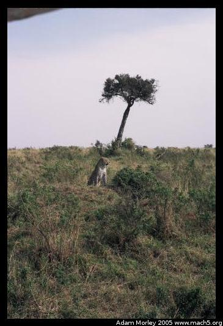We even saw a cheetah.
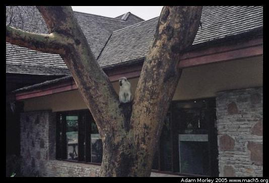A monkey, sitting in a tree by a hotel.
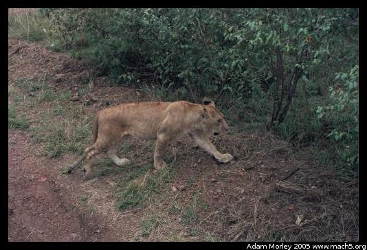 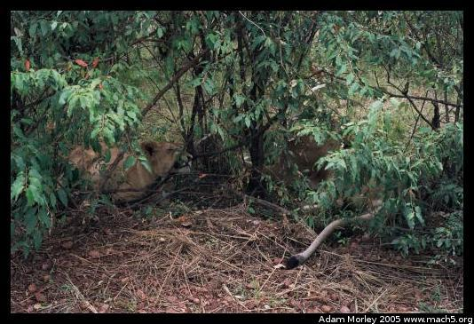Lions! Only 13 feet away (said the distance scale on my camera).
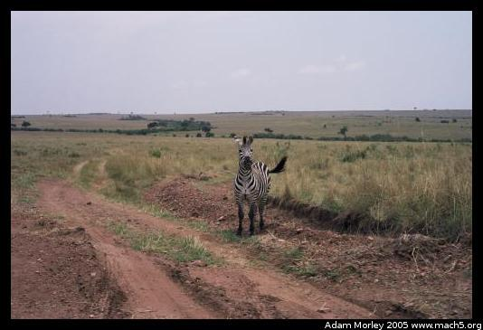And one friendly zebra. Most zebras ran away when we drove near, but this one stuck around and stared at us for a while.
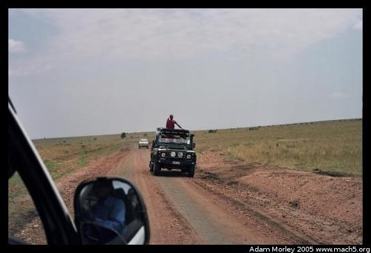On the high-price safaris, you even get a Maasai guide.
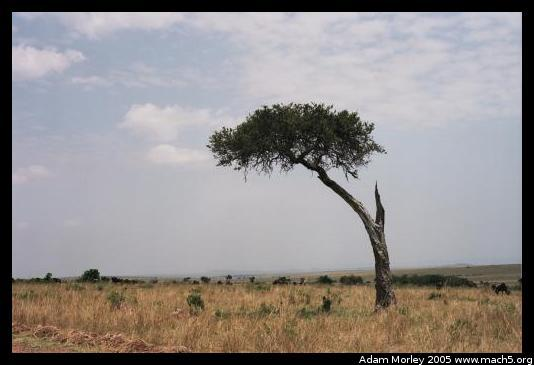One of the trees made famous by countless safari pictures.
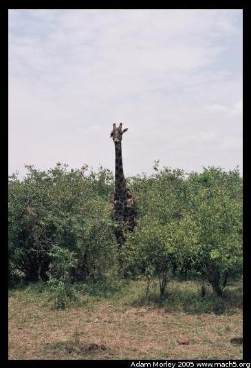 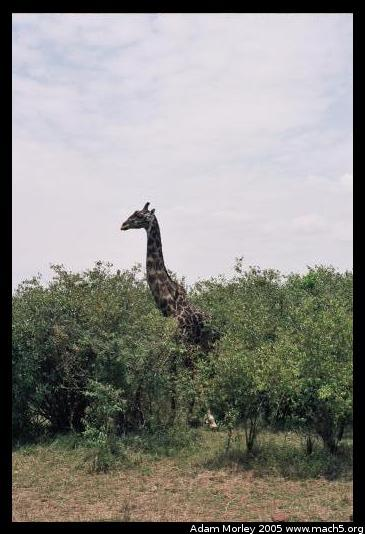 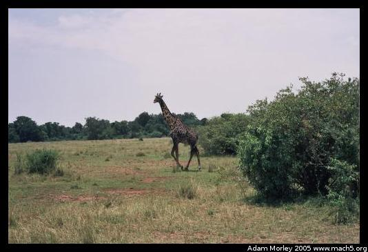While we were heading for Tanzania, we saw a giraffe pop its head out of the bushes, and then walk off to find a new patch of bushes.
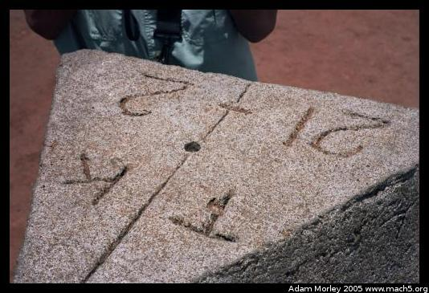The stone marking the boundary between Kenya and Tanzania.
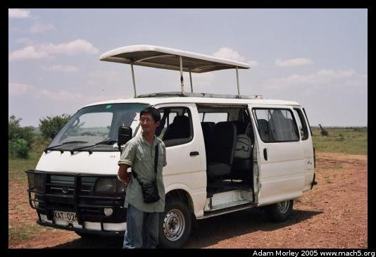Our little van, complete with pop-up roof.
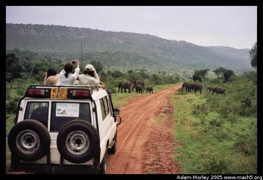 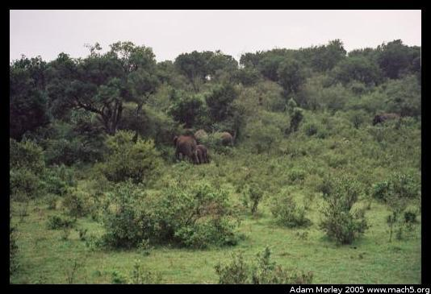On our way back to camp one night, we came across some elephants.
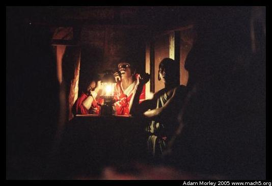The Maasai ran the bar at the safari camp.
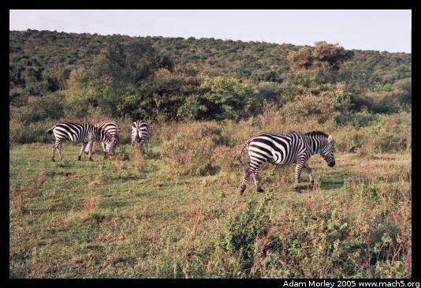 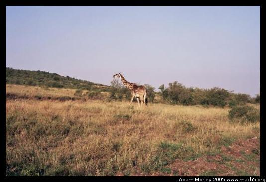Early morning animals.
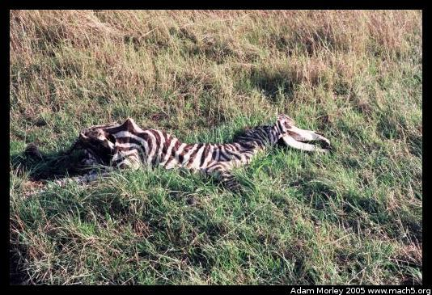A zebra died (supposedly of natural causes), but no animals disturbed its skin which seemed quite odd.
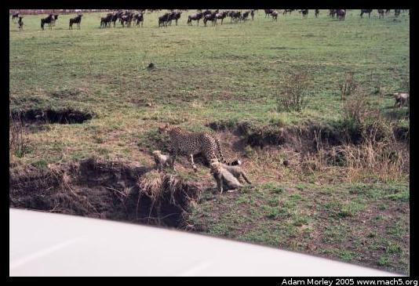A cheetah with her babies.
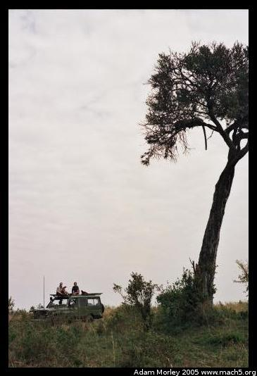See the cheetah?
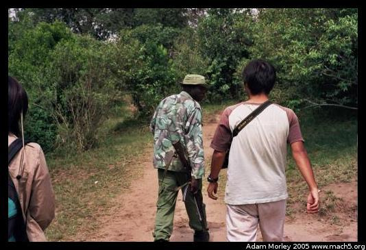One of the days of the safari, we stopped and a guide led us to see the hippos. He carried a rifle in case one had stayed in the bushes and charged us.
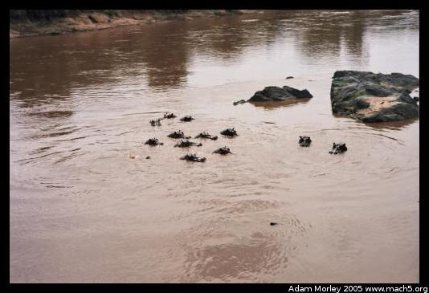So we saw the hippos, and heard them make their characteristic noise. Then we went to see the crocodile. Our guide told us about the crocodile, and we stared in awe of the nature. Then our guide's phone rang. He answered. It was his mom. Welcome to safari in Kenya. On cellular reception: it was available nearly everywhere, and most of the time the connections (even transatlantic ones) were higher quality than ones here in the USA.
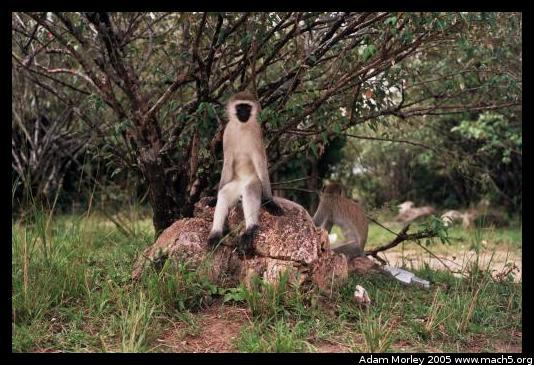A monkey near the river.
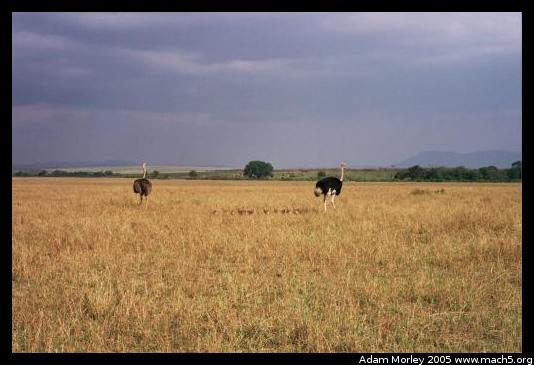A male and female ostrich with their little babies (look carefully).
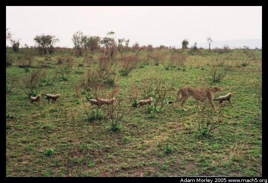 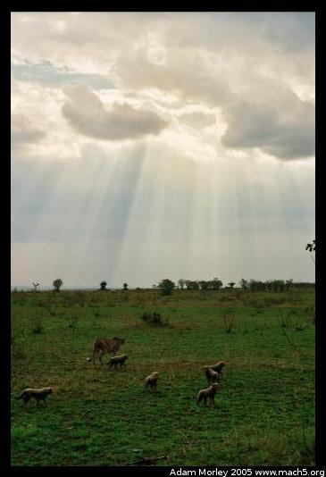 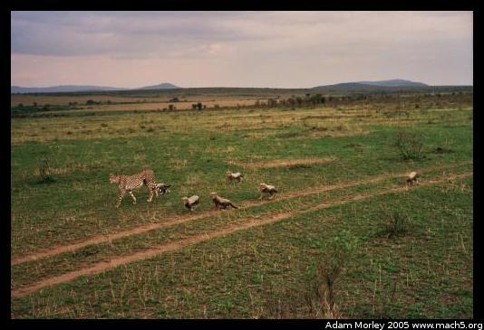The cheetah with her six (!) kids.
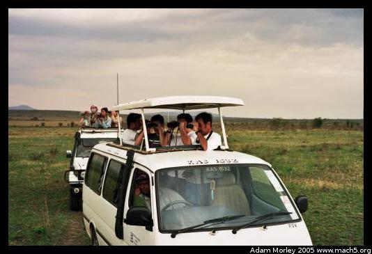One of the funniest photos I took. Everyone is trying to find the cheetah. German tourists (foreground) and Taiwanese tourists (background). The Taiwanese tourists often wore masks, apparently to avoid the dust, though there was very little dust.
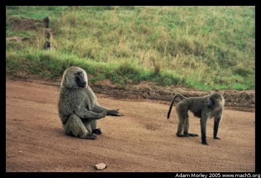 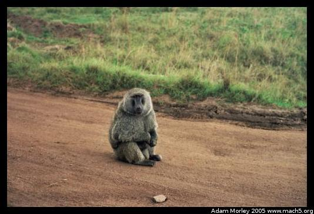 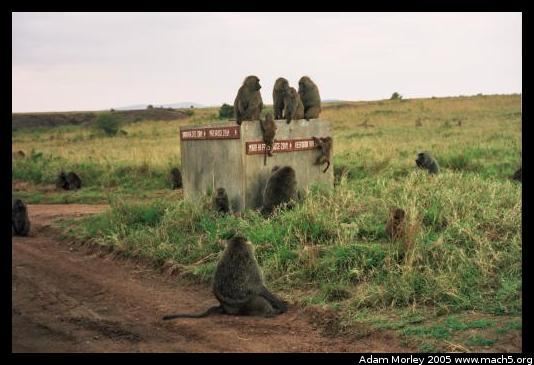Baboons.
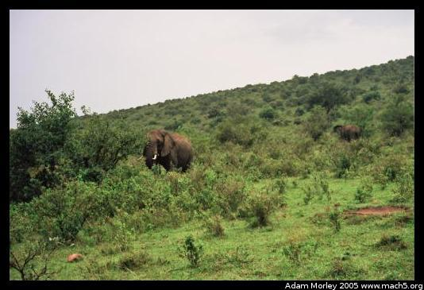 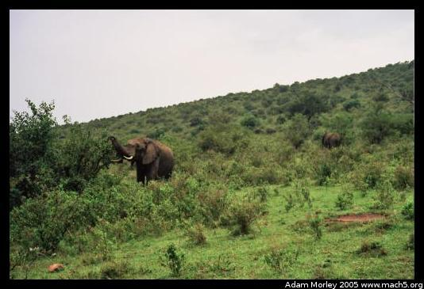Some final elephants.
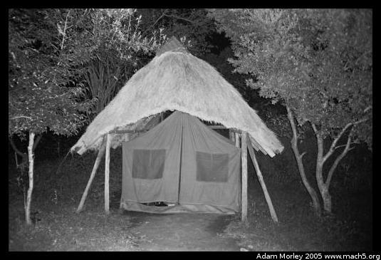My tent at the camp, which I shared with a very nice man from Japan.
Safari: it's cool to see the animals. Don't take too many pictures. Don't worry: you'll see all the exciting animals eventually.
Adam can be reached at adam dot morley at gmail dot com